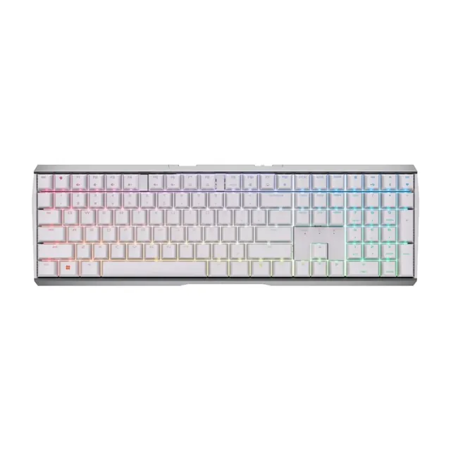
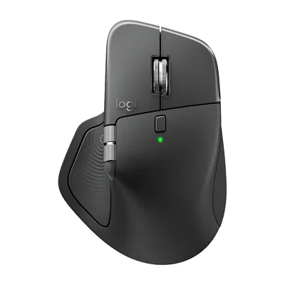
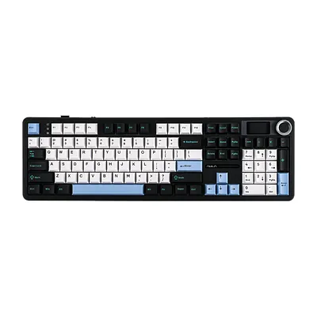

AX 타자왕 · 1F
AX Festival 2026
DEMO · 가짜 순위
연결 다시 시도 중 · 마지막 순위 표시
PROMPT >
1
노트북 화면
QR
찍기
SPACE
2
SPACE
로 시작
프롬프트
AI
3
떨어지는
단어
입력
START
1

기계식 키보드
체리 G80-3872
2

마우스
로지텍 MX Master 4
3

기계식 키보드
AULA F108 Pro
1~3위 시상 ·
17:00 마감
HIGH SCORE
1F 현장 TOP 10
다음 이름은 당신
17:00 마감